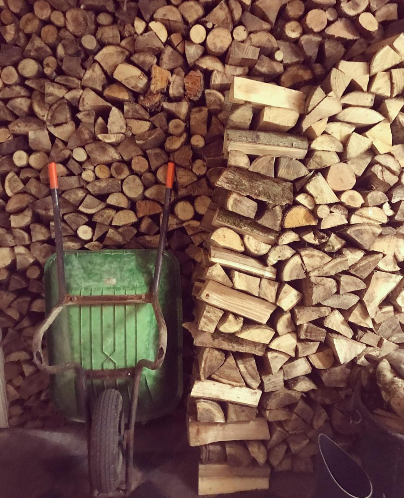
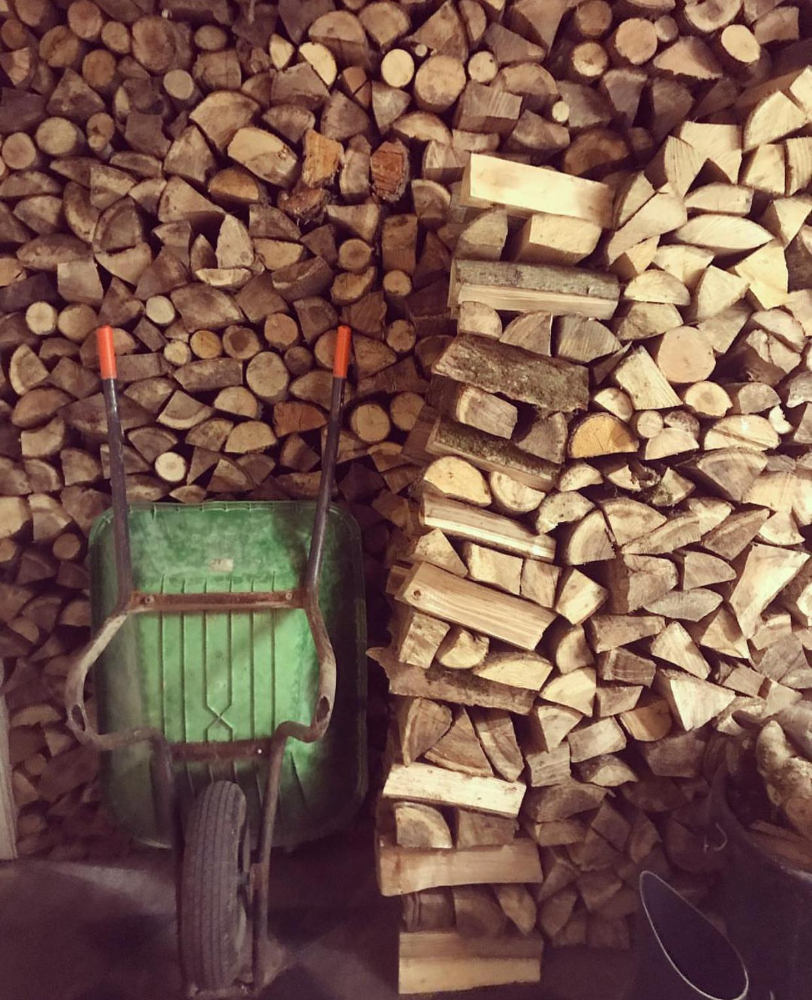

Türkçe
Türkçe İngilizce
İngilizce İtalyanca
İtalyancaHazırlama Süreçleri
Aşağıda odunlarımızın ve kerestelerimizin hazırlanma süreçleri detaylı olarak verilmiştir.

Aşağıda odunlarımızın ve kerestelerimizin hazırlanma süreçleri detaylı olarak verilmiştir.


Şeker Yakacak Odun olarak 10 yıldan fazla bir süredir fırınlara, distribütörlere ve özel kullanıma yönelik, müşterilerimizin istekleri ve arzuları doğrultusunda farklı tiplerde ve ebatlarda odun servisi sağlıyoruz.

Şeker Odunculuk Resmi sitesi

 
